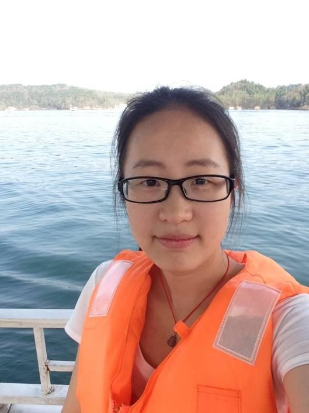

<陆杨洁
个人简介：
 西南科技大学软件工程专业在读研究生一枚，独立、自学能力强，对移动互联网创新有着极大地热情。热爱iOS开发技术，关注移动互联网热点流行趋势，接受新事物能力强。在学校有在学生工作经历，能很好得与人沟通，具有很好的团队合作精神；对参与的工作会付出全部精力和热情。在同学眼里，是一个阳光、积极、负责的人。
中间件iOS客户端设计、实现、测试。
博客地址：邮箱：jelly_6_l@hotmail.com
技能： 1.专业基本功扎实，能用于实际开发；
2.熟练掌握Objective-C语言，在实际项目中熟练使用；
3.熟悉Swift、C语言，能阅读JS、HTML、CSS，了解Android开发；
4.熟悉MS Visio、Power Designer等建模工具，有oracle、mysql数据库开发经验；
5.熟悉SVN版本控制工具，掌握规范化的软件开发方法，能够快速有效地完成开发任务。
特长：摄影
座右铭：世界因我而精彩！
所获荣誉：国家励志奖学金，国家二等专业奖学金